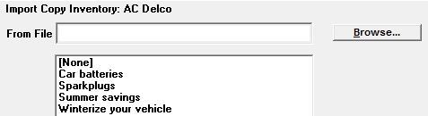

Importing New Inventory
If an agency has many new pieces of copy that require entry into the system, as an alternative to manually entering each new piece of copy, the inventory can be imported from a CSV file (comma separated values file).
If using Carts, this feature is only available if the Media Code setting “Re-use expired #s” is set to Yes. This setting can be seen on the Lists screen->Media Definition screen.
Import File Structure
The CSV import file will either come from the agency, or it can be manually created. For the import filename, it is recommended to use a descriptive filename that includes the advertiser and product.
Each line of the file must contain the following fields, separated by a comma:
- Spot Length (mandatory)
- ISCI Code (mandatory)
The Creative Title can also be defined, although it is optional.
The following additional fields may also be defined, but will be ignored by the import process:
- Type
- Type Name
- Type Number
- Flight Start Date
- Flight End Date
- Rotation %
Each field must be separated by a comma, and each piece of inventory must be on a separate line. An example is shown below with the spot length and ISCI code (the only two mandatory fields) included.
30,AC001
30,AC002
30,AC003
60,AC004
60,AC005
Import Procedure
Once the file has been prepared and is ready to be imported, place it in the CSI\Prod\Imports folder.
To begin the Import procedure, on the Copy screen, first select the advertiser the inventory is intended for, then double-click “New” from the Inventory area to bring up the Copy Inventory screen. If the radio button in Traffic Site Options->Copy->Copy Inventory By is set to “Both”, then instead of “New”, it will show “New-ISCI” and “New-Cart”, and you must choose whether to add new ISCI codes or new Carts.
From the Copy Inventory screen, press Import to bring up the Browse menu.

Click “Browse…” to locate the CSV file. It will default to the Import folder specified on the Traffic.ini. If the import file is in a different location, navigate to the file then select it.
Select the product the copy is for by clicking in one of the products in the field directly under the “From File” field, or select “None” if no product is needed, then press “Convert Files” to import the data. If the import process was successful, the new inventory will be added to the system and will appear in the Inventory area on the main copy screen.
Import Messages
If an issue was encountered during the import process, a message will be displayed in the Results window.
- No purged copy inventory records to be used: This message means that no inventory was available. To correct it, Purge more inventory then rerun the import.
- ISCI previously defined, import record bypassed: This message means that the ISCI being imported was previously defined and can’t be used again (every ISCI in Counterpoint must be unique).